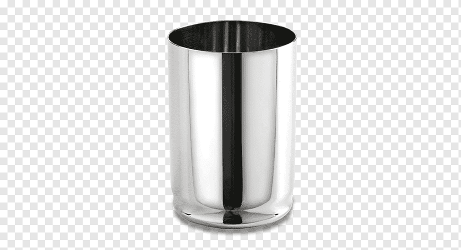
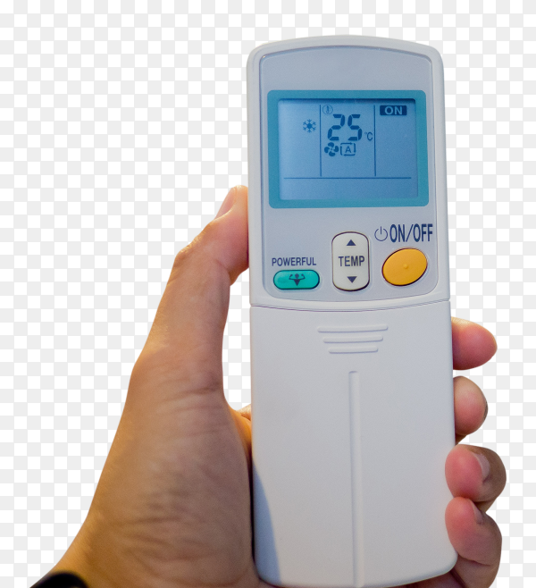

Test Image - Steel Glass

Output on GOOGLE LENS -
Vardhman Steel Glass
Output on MOBILENET MODEL -
Glass
Result-
Google lens is more acccurte
Test Image - Dictionery
Output on GOOGLE LENS -
Dictionary
Output on MOBILENET MODEL -
Book
Result-
Google lens is more accurate
Test Image - Remote

Output on GOOGLE LENS -
Ac Remote
Output on MOBILENET MODEL -
Box
Result-
Google Lens is more accurate
According to my study Google Lens is more accurate than MOBILENET